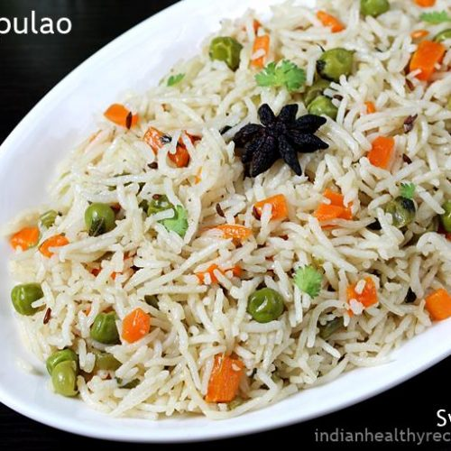

Pulao

Description
Pulao or pulav or pilaf, is comfort food at its best and I make it when I want to cook something quick, easy and satisfying. This one-pot dish made with fragrant rice and colorful healthy vegetables has added spices and herbs, giving it a mild fragrant flavor.
This special veg pulao recipe is my mom's and is my go-to recipe when making vegetable pulao. The dish is also vegetarian and is great on its own or paired with raita (an Indian yogurt dish), pickle and roasted papad (a crisp thin Indian snack).
Ingredients
For Soaking Rice
- 1.5 cups basmati rice - 300 grams, rinsed & soaked for 20 to 30 minutes
- Water - as required for soaking
Vegetables
- ½ to ¾ cup chopped cauliflower florets
- ½ to ¾ cup chopped potatoes
- ¼ cup chopped carrots
- ⅓ cup green peas - fresh or frozen
- ¼ cup chopped green beans (french beans)
- ¼ cup chopped green bell pepper (capsicum) - optional
- ¼ cup sliced baby corn - optional
Other Ingredients
- 3 tablespoons Ghee or oil
- 1 cup thinly sliced onions or 1 large onion, sliced
- ½ cup chopped tomatoes or 1 medium sized tomato, chopped
- 1 to 1.5 inches ginger - crushed to a paste in a mortar-pestle
- 4 to 5 garlic cloves (small to medium sized)
- 1 to 2 green chillies or 1 teaspoon chopped green chili pepper
- 1 to 2 green chillies or 1 teaspoon chopped green chili pepper
- 2 tablespoons chopped mint leaves - optional
- ¼ teaspoon lemon juice - optional
- 2.5 to 3 cups water or vegetable stock
- Salt as required
Whole Spices
- 1 teaspoon cumin seeds or 1 teaspoon caraway seeds (shahi jeera)
- 5 to 6 whole black pepper - optional
- 1 tej patta (Indian bay leaf)
- 4 cloves
- 3 to 4 green cardamoms
- 1 black cardamom - optional
- 1 small piece of mace - optional
- All-sized star anise - optional
- 1 inch cinnamon
- small piece of stone flower (dagad phool or patthar ke phool) - optional
For Garnish
- 1 to 2 tablespoons chopped coriander leaves or mint leaves
Steps
- Rinse rice till the water runs clear of starch and become transparent while rinsing.
- Soak the rice in enough water for 20 to 30 minutes. Drain all the water and keep the soaked rice aside.
- Rinse, peel and chop the vegetables.
- Crush chopped ginger, garlic and green chillies to a paste in a mortar-pestle or grind them in a small mixer or grinder with a bit of water.
Frying Spices And Sautéing Onions
- In a deep thick bottomed pot or pan, heat ghee or oil and fry all the whole spices mentioned above, till the oil becomes fragrant and the spices splutter.
- Add the onions and saute them till golden. Saute the onions on a low to medium-low heat and stir often for even browning.
- Add the ginger-garlic-green chili paste and saute for some seconds till their raw aroma goes away.
- Add the tomatoes and sauté for 2 to 3 minutes on a low to medium-low heat.
- Add all the chopped veggies, green peas and sauté again for 1 to 2 minutes on a low to medium-low heat.
- Add rice and sauté gently for 1 to 2 minutes on a low or medium-low heat, so that the rice gets well coated with the oil.
- Add water and lemon juice. Mix and stir.
- Season with salt and stir again.
- Cover tightly and let the rice cook on a low heat, till the water is absorbed and the rice is well cooked.
- Check in between a few times to check if the water is enough. Depending on the quality of rice, you may need to add less or more water. With a fork too, you can gently stir the rice without breaking the rice grains.
- Once the rice grains are cooked, fluff and let the rice stand for 5 minutes.
- Serve pulao hot with some side salad, sliced onion and lemon wedges or raita. You can also garnish it with chopped coriander or mint leaves or fried cashews or fried onions.